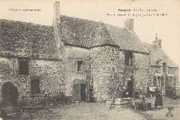
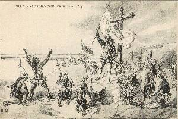
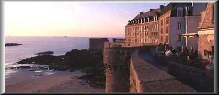
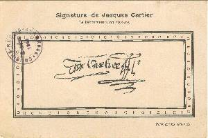

|
Could the way to the Sea of Asia lie between Florida, discovered for Spain by Ponce de León, and the "new found lands" of John Cabot, sponsored by England? France will try to find out.
If France wants its share of the riches of Asia, it must join the race. |
|
| Giovanni Verrazzano
proves that North America exists...
Financed by Italian bankers in Lyon, another Italian (clearly all the captains of the day were Italian!), Giovanni da Verrazzano puts to sea for France in 1524. He ignores the two usual routes (the North Atlantic or the Antilles) and heads straight for the island of Madeira. After two months he reaches what is now North Carolina. He too runs up against a coastline. So he decides to head north, hoping to find a passage. Magellan found a passage at the southern tip of America in 1519; there must be one at the northern tip too. Chesapeake Bay gives him hope, but he is disappointed. He sails up rivers such as the Hudson, without success: the barrier across the route to Asia goes on and on. He gives French names to every place he visits, and spends two weeks taking on supplies at "Refuge", which will later become Newport, Rhode Island. Then he carries on north, looking for a gap in the barrier. Verrazzano is the first to sail along the coasts of New England and New Brunswick. He seems to have missed the opening between Cape Breton and Newfoundland. He goes as far as Labrador, then returns to France the same year. Along these 3,000 kilometres of coast he has found no way through to the Sea of Asia. But it was now known that between Florida and the "new found lands" the coastline is unbroken.
The other nations do not stand idly by. Spain, which can claim this continent under the papal division of 1493, sends two expeditions in a row, but does not find a passage west either. Henry VIII of England also sends two ships. One of them enters the Gulf of St. Lawrence, where it leaves a name, "cap de Prato", which Cartier will note in 1534 in the Gaspé. |
|
|
|
|
| Jacques Cartier hits the bull's-eye... | |
|
"Cartier, Cartier, oh Jacques Cartier, if only you had sailed away from winter. Cartier, Cartier, oh Jacques Cartier, if only you had sailed toward summer......." |
|
|
You all know Charlebois's song, regretting that Cartier did not discover a country farther south. But Jacques Cartier is an excellent navigator; he did not set off at random, he was obeying his king's orders.  Cartier is an experienced sailor, born in St-Malo, in the manor house opposite.In 1534 Francis I gives him the Baie des Châteaux (the Strait of Belle Isle) as his first stage. His mission is to find the passage to the Sea of Asia from there. Until then the hinterland of Newfoundland had been wrapped in mystery; no one knew whether it was an island, an archipelago or a cape. … Cartier knows the Newfoundland area well and sails there directly from Saint-Malo. |
|
|
|
|
|
|
So in his carrack he enters this inland sea. He follows the Newfoundland coast south, guessing that there is a strait between this land and Cape Breton. He is right, and he will be the first to sail through it, but on a later voyage. For now he turns west, since it is a route to Asia he is looking for. He sounds every opening he finds. On July 3 he enters, full of hope, the Baie des Chaleurs. On the 9th, disappointed, he realizes that this opening is closed off by a horizon of mountains. He meets Indigenous people and, for the first time, Cartier describes a fur trade for us, the trade that over the next two centuries would create so much wealth and so many problems. |
 Later that July, forced by bad weather to linger in Gaspé Bay, Cartier meets Iroquoians who have come to catch fish. So Cartier establishes the first European relations with members of a civilization that will play a leading role in the centuries to come. He plants a cross as a sign of taking possession. Chief Donnacona protests; Cartier seizes the chief's two sons. The Malouin (man of Saint-Malo), planning to return the following year, wants these young men to learn French so they can serve him as guides.Cartier continues his voyage north, but the bad winds come and, rounding Anticosti, he sets course for France. |
|
| Jacques Cartier's second voyage | |
|
 The port of St-Malo, Jacques Cartier's point of departure. The king agrees to let Cartier sail again. In 1535 he is given three ships instead of two to complete the voyage he had begun. Cartier goes back directly to where he had left off his search, north of Anticosti. Thanks to the two captured young men, he now knows he can sail up a river that will take him to "Canada". He calls this river the "rivière de Canada". His guides have told him that this river comes from so far away that no one knows of any man who has been to its source. Could this at last be the long-sought passage to Asia? Cartier is eager to find out, but he does not want to miss any possible opening. So he zigzags from one shore to the other, sounding and naming the bays and river mouths, such as the one the guides say is "the way to the kingdom and land of Saguenay". On September 7 he reaches the Île d'Orléans. He anchors his ships in a small river behind the promontory on which the city of Quebec will later stand. Close by is Stadaconé, an Iroquoian capital. His two guides are reunited with their father, Donnacona. Cartier is then told of another capital, Hochelaga. He goes there on his smallest ship, without guides, since the young men do not want to go with him. All along the way he marvels at the beauty of the country, the abundance of farmland and the wild grapevines. He leaves his ship at the south-west end of Lac Saint-Pierre and reaches Hochelaga on the evening of October 2. He is well received and leaves us an account of an Iroquoian village. From the top of the mountain he names Mont-Royal he surveys the surrounding country. Without his interpreters, he still tries to communicate with the people there. He gathers that you can sail more than three moons (months) farther up this river, and that north of Hochelaga a great river (the Ottawa) flows from the west, from which come gold, silver, and enemies who wage constant war. Are these the Algonquians? That is all Cartier can learn, and all that would be known about it in the 16th century. Back at Stadaconé, relations with the inhabitants are less friendly. They were happy to trade with the strangers, but did not want them to settle. In front of his ships Cartier builds a palisaded fort, armed with artillery, to spend the winter. The chief's two sons warn him of the harshness of winter and advise him to leave. But Cartier, who knew only the winters of Brittany, would not listen. Of course the St. Lawrence winter was terrible for Cartier and his men, from the cold as much as from scurvy. By a ruse he manages to get from one of the local people the remedy for scurvy, but it was too late for many. Having lost too many men, he will have to abandon one of his ships when he leaves for France. Once again he takes local people with him as prisoners, those who opposed him, including Chief Donnacona. |
|
| Francis I decides to found a colony in Canada | |
| Following Jacques Cartier's reports,
Francis I decides to found a colony. The project is delicate, since
Spain and Portugal cannot ignore France's intrusion
into lands granted to them by the
Pope. So as not to offend the Holy See (a great
political power), France puts a religious label
on its ventures in
Canada. How could the Pope object to a
missionary goal?
Francis I appoints a nobleman, La Rocque de Roberval, to head the venture. He was to recruit noblemen, which was easy, since they were promised seigneuries. But for settlers they had to fall back on criminals taken from prison, since ordinary people did not want to come. While Roberval was preparing his colonizing venture, Cartier was allowed to leave ahead in the spring of 1541, without bringing back the people he had abducted in 1536. Wary, he settles west of Cap-aux-Diamants. He sets up a colony called "Charlesbourg-Royal", building dwellings inside a palisade of stakes. A garden is planted. But things go wrong during the winter of 1541-1542. The local people declare war on the French. That is when the long conflict between the peoples of Iroquoian culture and the French begins. Cartier uses this as a pretext to break camp in June 1542, taking with him eleven barrels of gold and diamonds. He had found all of it on Cap-aux-Diamants. In Newfoundland he meets Roberval, who is arriving a year late with two hundred people, the ones he had found for the new colony. Roberval orders Cartier to turn back and go with them, sure he has enough strength to subdue the local people. But Cartier is burning to be the first to present his cargo of gold and diamonds to his king, a first assessment of which in Newfoundland had been positive. Cartier waits for nightfall and sets sail for France, abandoning Roberval and the new colony to their fate. Roberval goes on alone to Charlesbourg-Royal and settles his colonists. Then came winter, a harsh winter marked by a shortage of provisions and by scurvy. A quarter of the population died. In June 1543 a supply ship arrives. Roberval and his people all sail back to France. The Spanish and Portuguese could sleep soundly: the attempt to create a New France in the northern "new found lands" had failed. |
|
| Jacques Cartier's legacy | |
 In fact Jacques Cartier had
brought back to France only quartz, not gold and
diamonds. That was the end of his career. His desertion was
a formal act of disobedience to his superior, and did great
harm to the colonizing effort. He was essential to keeping this
first colony going: he alone knew the country and its people well; he
had lived through two Canadian winters and knew the secret of the cure for
scurvy. In fact Jacques Cartier had
brought back to France only quartz, not gold and
diamonds. That was the end of his career. His desertion was
a formal act of disobedience to his superior, and did great
harm to the colonizing effort. He was essential to keeping this
first colony going: he alone knew the country and its people well; he
had lived through two Canadian winters and knew the secret of the cure for
scurvy.
But Cartier still accomplished a great deal for France. To him goes the credit for discovering a river that would become the main route of French penetration into North America. Most of the place names given by Cartier, French or Indigenous, survive to this day. He opened wide possibilities for the people of his time who still and always wanted to reach the Sea of Asia: he had understood from the local people that you could sail this river for another three months beyond the Montréal rapids. That opened horizons which, even in the 18th century, would inspire expeditions, including those of La Vérendrye. 
But to go farther, we must wait for the following century and the coming of Champlain. |
|
 Why does France arrive so late in this
race to the west? In the 16th century France is not a
seafaring power and does not have the naval means of England,
Spain and Portugal. What is more, its foreign policy is
focused on the Mediterranean. Francis I (1494-1547) will
change that, and he too turns his attention to the Atlantic.
Why does France arrive so late in this
race to the west? In the 16th century France is not a
seafaring power and does not have the naval means of England,
Spain and Portugal. What is more, its foreign policy is
focused on the Mediterranean. Francis I (1494-1547) will
change that, and he too turns his attention to the Atlantic.
 A milestone in cosmography: we are
in the presence of a New World. With Verrazzano, the
existence of a new continent, North America, is established. This
continent is given a new name that will last for two and a half
centuries: New France. Until 1760 this name would apply to
everything France claimed or occupied in North America, from
Hudson Bay to the Gulf of Mexico, from the Gulf of St. Lawrence to the "Western
Sea" (a sea not yet discovered but suspected to
exist).
A milestone in cosmography: we are
in the presence of a New World. With Verrazzano, the
existence of a new continent, North America, is established. This
continent is given a new name that will last for two and a half
centuries: New France. Until 1760 this name would apply to
everything France claimed or occupied in North America, from
Hudson Bay to the Gulf of Mexico, from the Gulf of St. Lawrence to the "Western
Sea" (a sea not yet discovered but suspected to
exist).